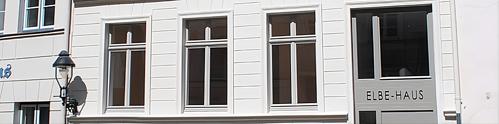
Große Altefähre 16 · Lübecker Altstadt · Anno 1884
Ein hanseatisches Kaufmannshaus von 1884 – aufwendig saniert, mit hohen, lichten Räumen und dem Flair der Lübecker Hafenkante.
Alle Wohnungen sind vermietet
Herzlich willkommen
Das Elbe-Haus in der Großen Altefähre 16 liegt zwischen den Straßen „Untertrave" und „Kleine Altefähre" – unweit des Europäischen Hansemuseums. Die breite Anlage der Straße begünstigte den Bau ansehnlicher Kaufmannshäuser und Reedereiniederlassungen. Das Elbehaus wurde 1884 erbaut und war ab 1914 Firmensitz des Binnenschifffahrtsunternehmens Karl Steder KG.
Hohe, helle und lichte Räume, die aufwendig und hochwertig saniert wurden und den aktuellen Stand der Zeit aufweisen. Nehmen Sie sich einen Augenblick Zeit und entdecken Sie die Stockwerke, die Lage und den Flair des Hauses.
1884
Baujahr
3,10 m
Deckenhöhe
2×3 Zi.
Wohnungen · 113 / 119 qm
2014
Kernsanierung
Hausbeschreibung
Ein typisches Altstadthaus in geschlossener Bebauung: Das dreigeschossige Vorderhaus trägt eine klassizistische Fassade mit Satteldach; EG/Hochparterre und 1. OG haben nach hinten einen Seitenflügel, die gesamte Bebauung umschließt einen Innenhof. Zur Nachbarschaft gehörten das Gorch-Fock-Haus (Nr. 18), das Finnlandia-Haus (Nr. 20–22) und die Reederei Bertling (Nr. 23).
Seit 1998 stand das Haus leer; 2014 wurde es gekauft und in enger Abstimmung mit dem Fachbereich Stadtplanung der Hansestadt Lübeck energieeffizient saniert und nach heutigem Standard außen wie innen modernisiert. Entstanden sind zwei Mietwohnungen und eine Gewerbeeinheit/Büro im Dachgeschoss.
Beide 3-Zimmer-Wohnungen haben 3,10 Meter Deckenhöhe und 113 bzw. 119,3 qm Wohnfläche. Die alten Pitchpine-Böden wurden freigelegt und modernisiert. Vollausgestattete hochwertige Küchen, Gäste-WC und Bäder, Rauchmeldeanlagen sowie Anschlüsse für Kabelfernsehen und Internet sind vorhanden. Der Innenhof dient als Freifläche; das voll unterkellerte Haus bietet Platz für Waschplatz, Abstellflächen und Fahrräder.
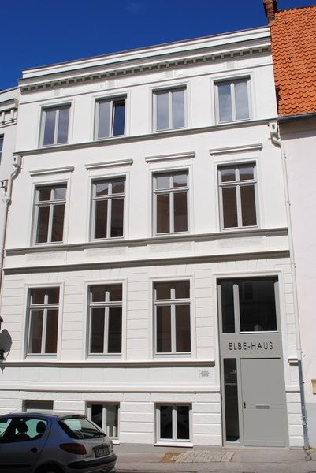
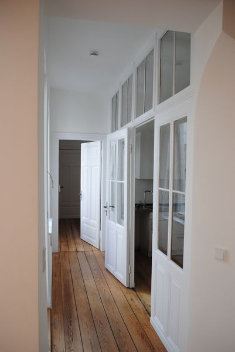
Grundrisse
Alle Grundrisse stehen Ihnen auch als PDF zum Download zur Verfügung.
Bilder
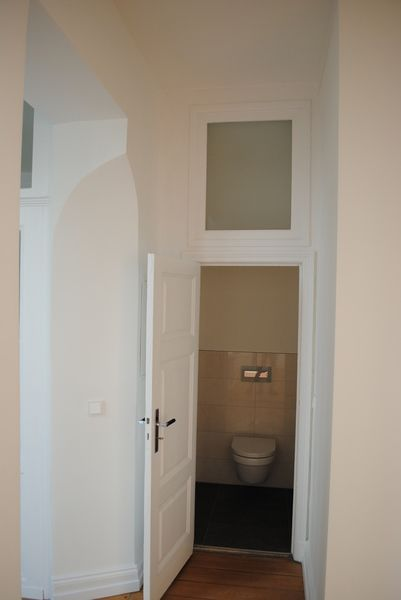
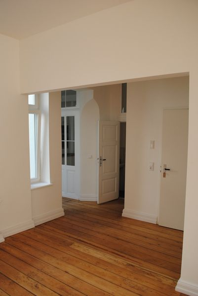
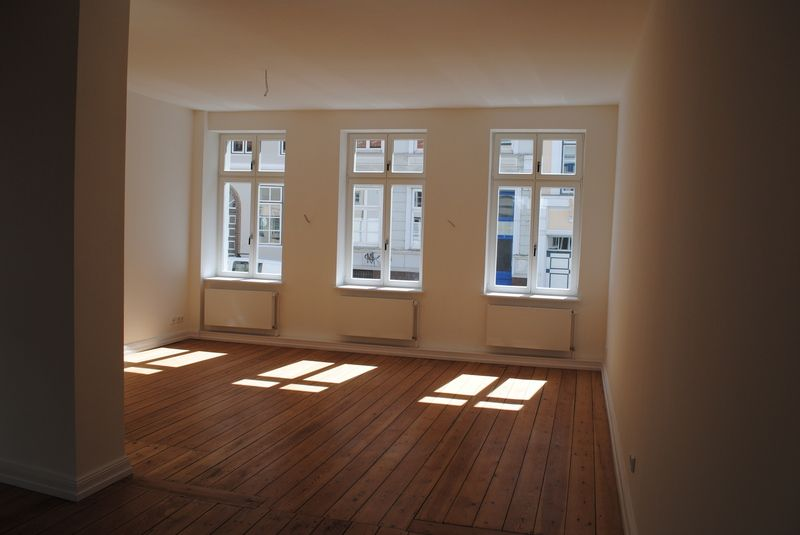
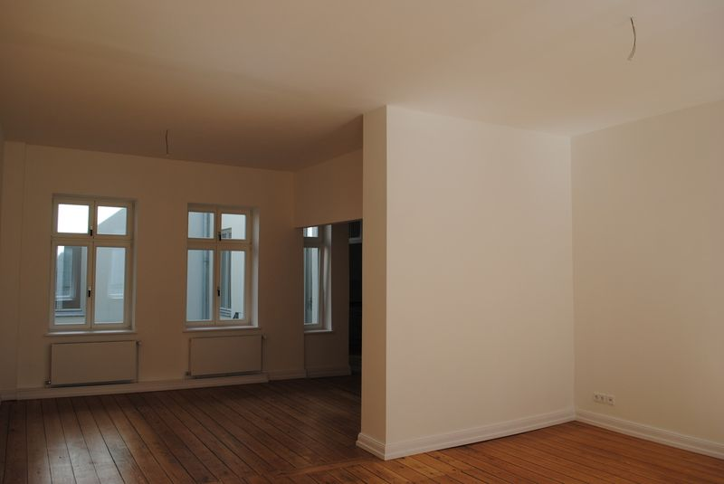
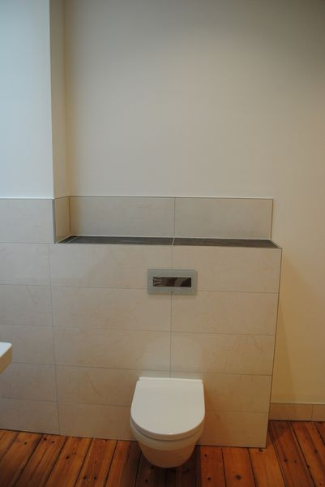
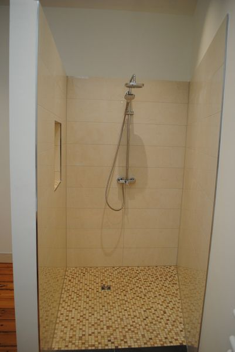
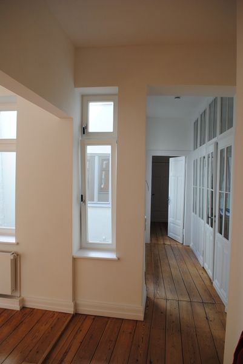
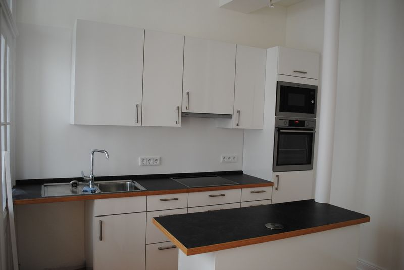
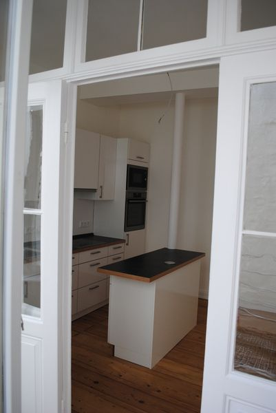
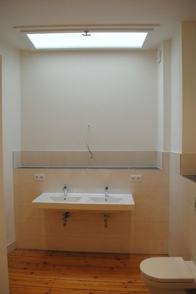
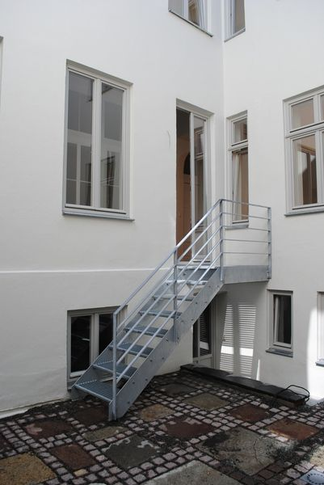
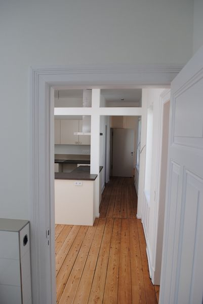
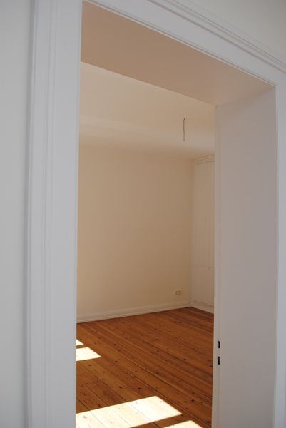
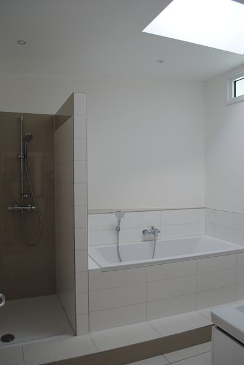
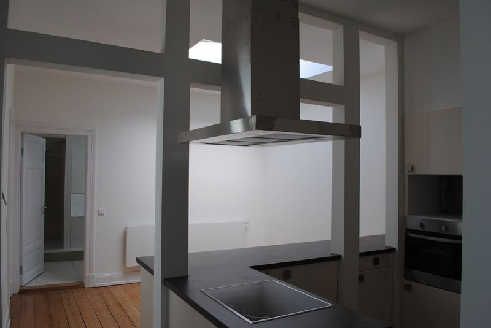
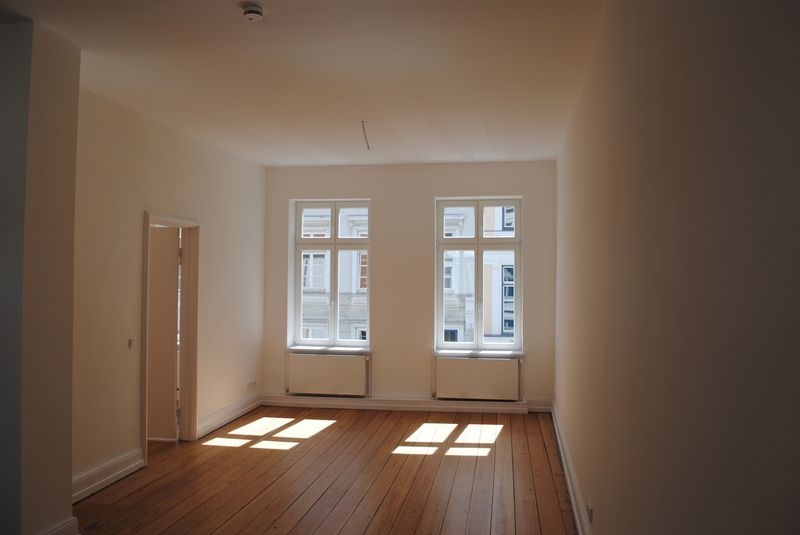
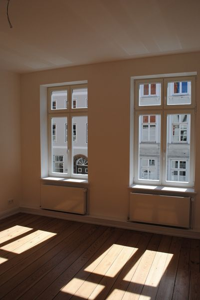
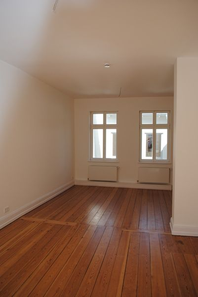
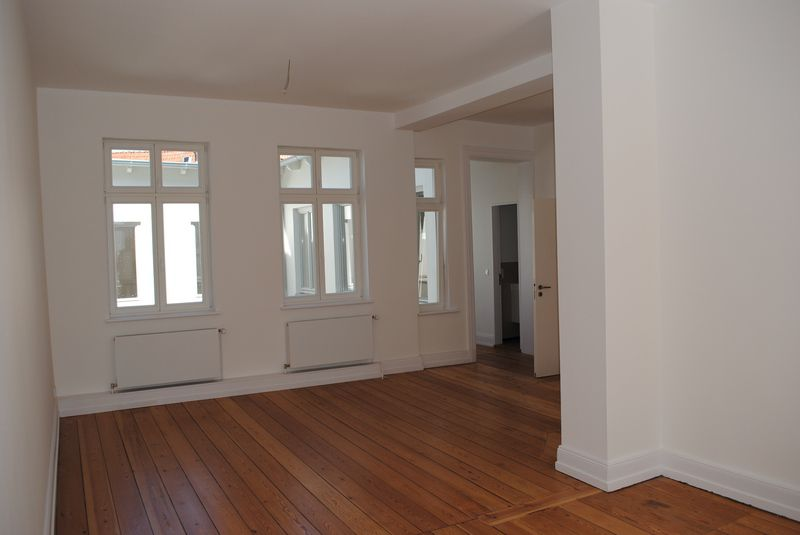
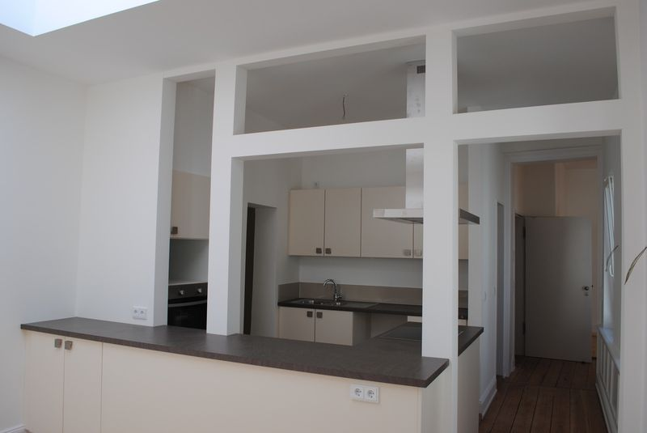
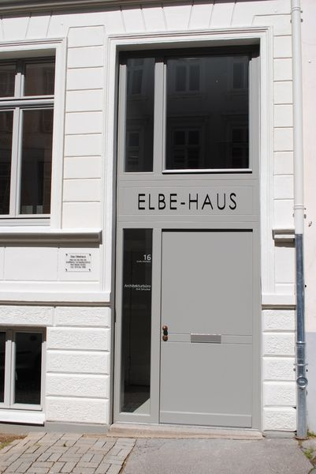
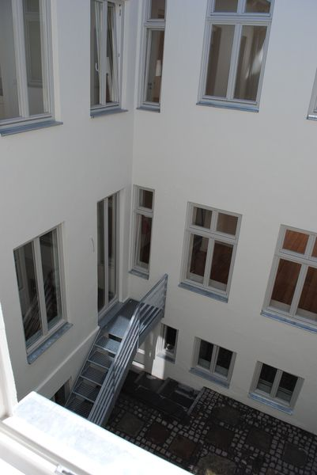
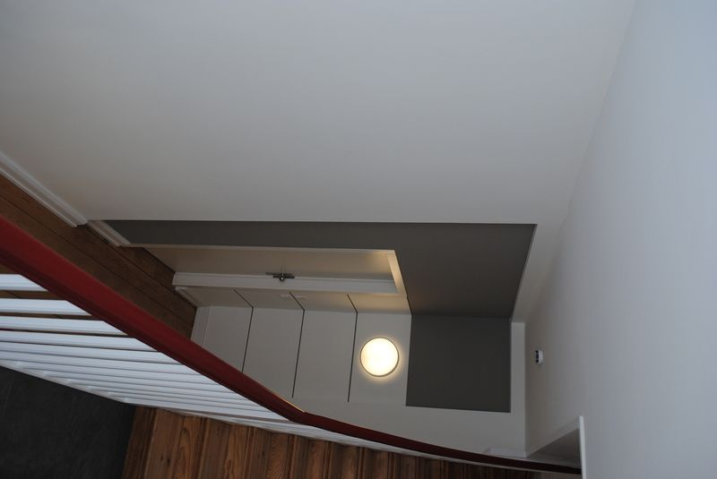
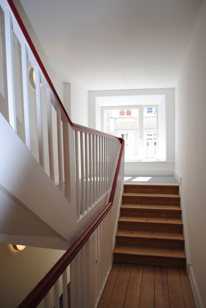
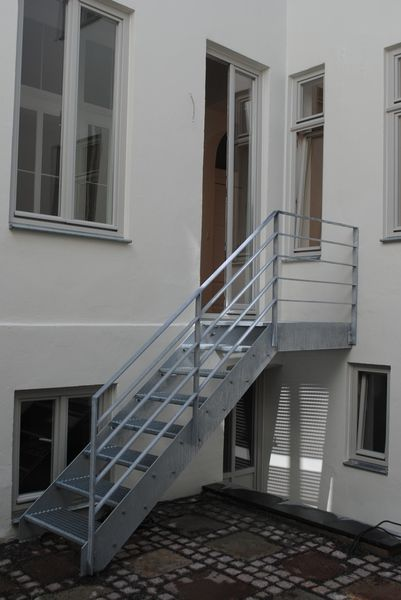
Lage
Zwischen Untertrave und Kleiner Altefähre, wenige Schritte vom Europäischen Hansemuseum entfernt – mitten im UNESCO-Welterbe der Lübecker Altstadt.
Elbehaus
Große Altefähre 16
23552 Lübeck
Kontakt
Haben Sie Fragen, Wünsche oder Anregungen? Nehmen Sie Kontakt mit uns auf – wir helfen Ihnen gerne weiter und vereinbaren gerne einen persönlichen Besichtigungstermin.
Elbehaus · Matthias Dütschke
Große Altefähre 16 · 23552 Lübeck
info@elbehaus-luebeck.deÖffnet Ihr E-Mail-Programm mit vorausgefüllter Nachricht.